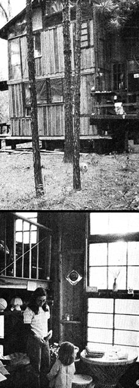
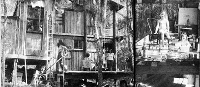

The night before we were scheduled to set the utility poles - destined to be the skeleton of our future house-in the ground, I lay in bed with one of the most severe nervous stomachs I could recall (even after years of living in town). It was worse than the nights when the police prowled in our yard shining their flashlights . . . worse, even, than the time a gigantic officer showed up at the door with a warrant for my arrest (because I'd let our dog run free in a leash-law city).
Unlike my other bad moments, however, this one didn't come as a shock, but arose from several months of what suddenly seemed like false assumptions. We'd bought our 27 acres and decided to build a house on the land without much thought as to whether I was up to the job. That night, it occurred to me that I probably wasn't.
"I just don't think 1 can do it, Renee," I moaned, near tears. "There's too much I don't know. If the house ever does go up it'll probably fall down again."
"Nonsense," said my wife. "Be comforted and get some sleep now, because tomorrow morning at 7 o'clock you've got to meet Mr. Craven and the auger truck and go into the woods to set the poles."
Renee was right, of course. Mr. Craven and I did meet, we did install the pressure-treated utility poles more or less in the correct places . . . and the house we hung from them is still standing, more than a year since we moved to the woods. Our two girls love the country, the garden is an organic success and the dogs run free. Those days I spent in offices with bureaucrats are what seem unreal now . . . but everyone knows that story.
Before we started on our home we visited Twin Oaks and
Ragged Mountain Farm in Virginia (and even toured Thomas Jefferson's Monticello). We did some reading, too: a couple of books on Japanese temple buildings, Your Engineered House by Rex Roberts and Ken Kern's Owner-Built Home. More than anything else, it was Ken's work-plus a lot of help from some fine friends-that put our thinking into perspective.
I began by drawing house plans for pole structures based in part on a modified chickee (a Seminole dwelling) that a friend had built near Gainesville. When I sent my sketches to Ken Kern along with my order for his book, he returned the designs with blue penciled notes and some conceptual suggestions that began to set us free. We realized that we'd been bogged down in drawings, and had made our pseudopreoccupation with them an excuse for not getting on with the real business of putting a structure together. In the end we used various of Kern's principles, as we understood them, but constructed our new home without a preconceived plan.
I still think, a year later, that the best advice to any amateur homebuilder is "Do it!" Read enough to get some principles in mind, and take a careful look at the design and function of the native structures in the countryside around you. But cut off the theorizing before it becomes an occupation in itself, or you'll never have that house.
If you work from your smoke dreams as well as your carpenter's manuals, the. house you build will be an expression of your emotions and aspirations (at least, of those you had at the time of its creation). Before our own project was done I felt that it was much more like a huge sculpture-a communal art work, because of the help our friends gave us-than a job of stick construction. We're happy with the result . . . although we realize that the house has many flaws and subtle shortcomings that need to be redone. Some of these-like the leaks around the poles-are structural and easily corrected. Others call for revision of our own heads (mine, at least) on the subject of family living.
Our house-a modified pole barn-started off with
12 utility poles bought from the local electric co-op and set eight feet apart on the north-south lines and spaced at ten-foot intervals on the sides running east to west. The site preparation was minimal: We just sawed down the small pine trees and left the stumps where they were. When the machine that set the poles had planted them six to seven feet in the ground, we plumbed them as much as possible with a level and packed dirt around their bases. Zippo-presto, our foundation system and the complete supporting structure for the living room and kitchen levels were in place in less than two days' time. (Those same posts, of course, reach all the way up to the roof to make the house a unit.)
One great advantage of a pole structure is that the builder can tie it together with beams and attach the roof system without relying on supporting walls inside or outside. Once the mainstays of our house were in place, we established the height for our first floor with a string and a simple line level . . . and notched each post at that point with circular saw and chisel. Bolted to the poles in the notches are 2 X 14 beams from an elementary school that was torn down-luckily for us-just when we needed lumber.
Although Rex Roberts recommends that an owner-built home be constructed all on one plane, we opted for a number of decks (one of them further divided by lofts) to put more variety into the space enclosed by our rustic lodge. These various levels, it's true, do force us to do a lot of climbing around .. . but we think that's just part of the fun of living in our home. We left a utility, workshop and wood storage space under the house, and planned three additional main levels above them. The lowest deck-the living room-is connected to the next highest (for kitchen and dining) by openings which function in summer as vents (to admit cool air from beneath the building) and during the winter as ports for firewood.
The third level is directly over the living room, with a view into the cooking and eating area, and serves as a general family center where, we figured, the children could play quietly and sleep. (As we learned later, that "play quietly" assumption was a big mistake.)
Once the beams for the lowest level were bolted in place, Renee stood off to eyeball the right height for the house's second deck. When she said "There!" I drove in a nail as a marker and repeated the line level process, followed by the bolting of the beams into prepared notches we'd used on the first landing. The third deck went up the same way.
Then came the floors. Across the 2 X 14 beams (which are about eight feet apart and roughly parallel) we toe nailed 2 X 6 joists, 24 inches on center. Next came a layer of 5/8-inch exterior plywood, followed later by tongue-and-groove flooring on a sheet of builder's felt.
The only floors to get this double treatment were those that would be exposed to the outer air . . . all interior walking surfaces are simply sheets of painted plywood. This fact, coupled with the optimistic "play quietly" assumption we'd made earlier, gives our house its biggest drawback.
If you're planning your own home, don't put the children's play area-where they'll be stomping and running and dropping things right above a space where you may be trying to nap, read or listen to music. Or, if you absolutely must do so, don't try to skimp on construction. Double floor the interior deck, insulate between levels and install a finished ceiling (either paneled or covered with acoustic tile) in the room below. We didn't take these precautions, and now we're waiting for the time and money that will allow us to finish this part of the house properly. In the meantime, whenever Brinley or Eda drops a marble or a book or a doll, the reverberation almost sends me up the wall. (If you have no family, or can at least put carpets or padding on such an overhead floor, this sound transmission shouldn't be too bothersome.)
Once we had our home's three major decks constructed,
we began to roof the building. Our rafters are 2 X 4's (this may sound light but they appear to be holding up satisfactorily) which we colored with a dark redwood stain. When the timbers were dry, we hoisted them to the top of the house and tied them with hurricane clips to the 2 X 14's which we had bolted to the main vertical poles. Then we nailed rough-cut 1 X 4's across the rafters at about 16-inch intervals. The whole construction was finally covered with galvanized steel roofing (and two translucent fiberglass panels). Later, when we got around to working on the interior, we installed inch-thick styrofoam between the rafters to give us a finished white ceiling set off by the dark wood. This simple roof system turned out to be relatively inexpensive, and easy for even us amateurs to build.
Once the roof was up, the walls, windows and other subdivisions were put
together. This was an exciting process, because I never knew how a partition would look until the materials and feelings were all on hand. We operated on the belief that things seem to happen when they're supposed to, and the house grew accordingly.
We started with the idea that the building would have minimal wall framing with six-mil plastic stretched on both sides. What we ended up with is used 4 X 4 framing in the living room and stretched plastic panels upstairs and in areas we weren't quite sure of. The wooden sections are filled in with a single thickness of board-and-batting cypress. Doors are courtesy of some friends who came along and gave them to us, and the windows come from an old school and a fraternity house that was demolished on a nearby campus.
This flexibility with which we altered our house as we went along may be the chief advantage of pole construction: When your walls are non-load bearing, you're free to change any of them at any time. And that's a significant freedom, because it gives [Click to Enlarge] you a home you can fit into emotionally . . . whatever changes come about in your life.
Our final big interior project was the building of two
sleeping lofts, accessible by ladders, above the level we use as a family room and children's play area. The girls love their snug nest, which they feel is just like the one in the storybook Heidi. Our own "bedroom", on the southeast corner of the house, is about 8' X 8' with approximately 3- 1/2 feet of clearance at the head of the bed and a ceiling that slopes to a height of around two feet over the foot. It's cozy-almost like an animal's den-and Renee and I both find ourselves emotionally attached to the space
We live quite comfortably year round in our lodge, partly because of our home's low air inlets and high exhaust vents, installed according to the principles of air circulation as described by Ken Kern. We also make use of south-facing glass areas which are shaded in summer by deciduous trees but admit winter's warm sunlight to keep the building's interior cozy and cheerful.
The traditional wood house of North Florida-built over 100 years ago as slave quarters and often still livable today was originally warmed by a brick fireplace. We like that idea but, in our home, have substituted two wood stoves for the fireplace. One is in the kitchen for cooking and the other (a Franklin) provides the living room with heat and the emotional satisfaction of a winter fire.
Each chilly night we bank up the Franklin heater and lay a fire in the cook stove before turning in. Next morning the air is cold and crisp when I crawl from beneath the electric blanket. But the house doesn't take long to warm up once the stoves are going, and we didn't have the flu or even a bad cold all last winter . . . a lot more than most city slickers can say. Even so, the cracks in our walls make it apparent that we're lucky to live in a climate where there's only about half an inch of snow every six or seven years.
In summer, those same cracks, and the fact that some of the windows aren't screened, make oil lamps preferable to the abominable incandes cents (as if they weren't anyway!) even though our house has electric wiring. Fewer bugs seem to be attracted to the open flame . . . and those that are get taken care of automatically so we don't have to spray a lot of poison around.
As I've already mentioned, some of our building materials were recycled . . . and I'd have made much more use of secondhand supplies if I'd known then what I do now. To find your own local sources of lumber, windows and whatever, keep an eye on the classified section of the newspaper. There are always barns to be torn down or private houses going cheap.
A nearby city's urban renewal project (arguments for and against the program itself not with standing) can be a useful pool of supplies. If you, like us, are lucky enough to have access to such an operation, contact the official in charge of having houses removed from their sites.
It's also an advantage to live-as we do-near the principal town of a fair-sized urban county . . . because you can usually find someone in the local government who's able to give you leads on buildings to be had for the removal, or on used and surplus materials for sale. The same is true of any large institution: a university, governmental or hospital complex.
I only wish I'd known more about such cost-cutting opportunities when our own home was under construction. As it was, the "pole barn" house came to more than it should have because we used a lot of new wood from a mill. But 1,000 square feet-surrounded by three outside decks overhung with dogwoods and mossy-bearded oaks-is a good deal of house for approximately $2,500.
I also wish I'd known how easy pole construction is before we started, and saved myself the strain of all those nighttime doubts. As it is, I'd at least like to reassure anyone else who wants to go the same route. If you can get hold of the poles, you need only minimal carpentry skills to build a house like ours . . . and the result is so simple, strong and inexpensive that it ought to make you a dandy first home.
Copyright © 2001-2002, Ogden Publications, Inc.
All rights reserved.
|
|
 |
 |
|
|
|
|